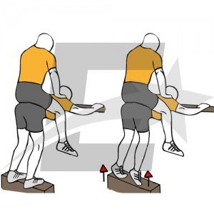

PANTORRILLAS GRANDES - EL MEJOR EJERCICIO para GEMELOS - YouTube
2021.06.22 17:31
Информация Преса Авторски права Връзка с нас Създатели Рекламиране Програмисти Условия Поверителност Правила и безопасност Как функционира YouTube Изпробване на нови функции © 2021 Google LLC
